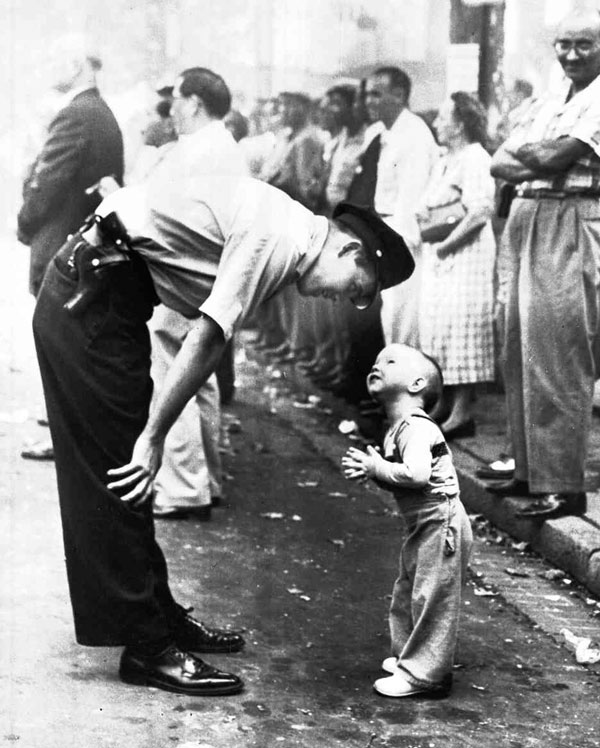

İnanç ve Güven isimli çalışmasıyla Pulitzer Fotoğrafçılık Ödülü’ne 1958 yılında sahip olan William C. Beall, bir geçit töreni hakkında fotoğraflar çekmek için bölgedeydi. Washington Daily News adına çalışan Beall törenin başlamasını beklerken sokağın halini fotoğraflamaya başladı. Bu sırada küçük bir çocuk geçidi daha rahat izleyebilmek için güvenli bölgenin dışına çıkarak, bir adım fazladan attı. Geçit alanının güvenliği sağlayan polis memuru küçük çocuğu uyarmak için eğildi ve saygılı bir ifade ile güvenliği için daha geride durması gerektiğini hatırlattı. Polis ile halk arasında çok şiddetli çatışmaların yaşandığı bir dönemde Amerikan basını tarafından ihtiyaç duyulan şefkatli polis pozu, Washington Daily News yayınları tarafından basılarak William C. Beall’e 1958 yılında Pulitzer Fotoğrafçılık Ödülü’nü getirdi.
